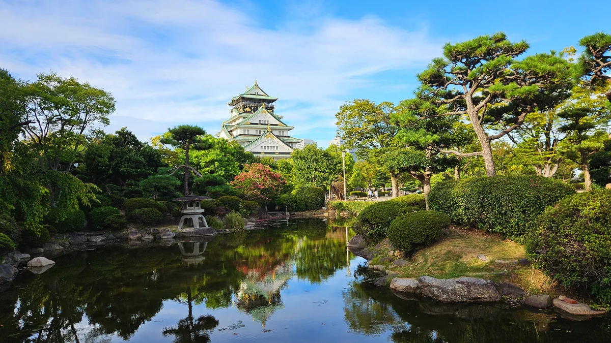
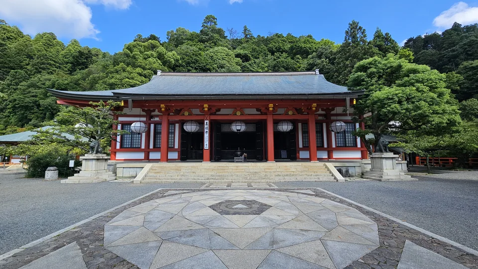
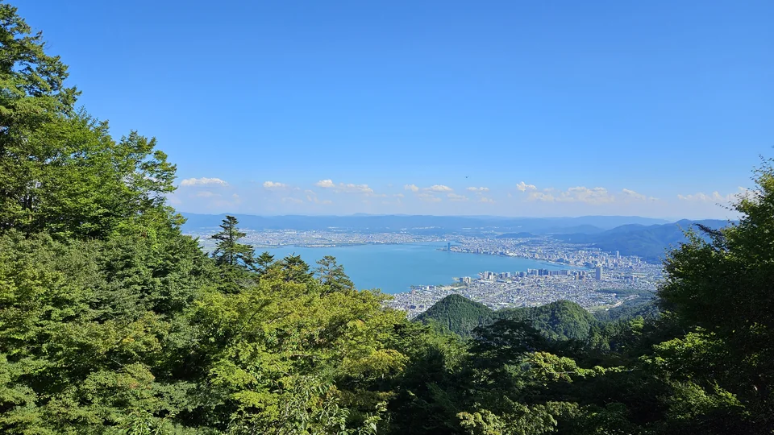
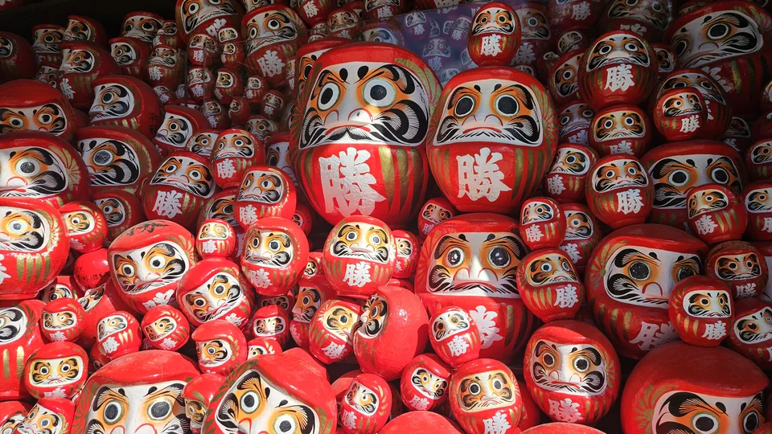
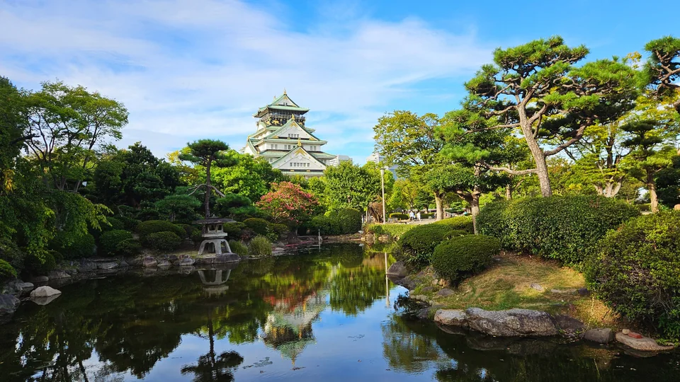
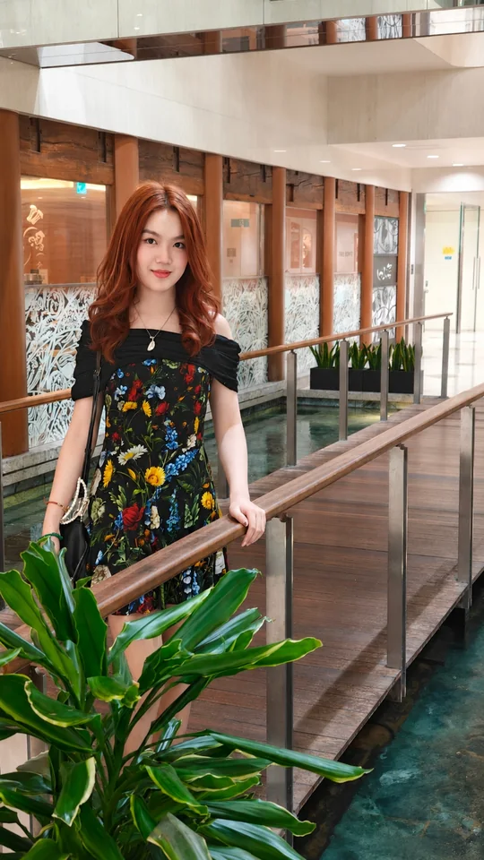

Family Moment
心境轉折
這趟大阪，是女兒約的
這次去大阪，其實非常臨時。
暑假快結束前，女兒忽然來問：「我們跟媽咪假期結束前要去大阪 shopping，你要不要一起去？」
反正我不去，錢好像也還是得出。既然都要贊助，那當然就說要去啊。結果我一答應，她們自己還非常驚訝，大概本來也沒真的覺得我會跟。
表面上是在問我要不要去，背後的潛台詞其實是：要不要贊助？

這次去大阪，其實非常臨時。
暑假快結束前，女兒忽然來問：「我們跟媽咪假期結束前要去大阪 shopping，你要不要一起去？」
反正我不去，錢好像也還是得出。既然都要贊助，那當然就說要去啊。結果我一答應，她們自己還非常驚訝，大概本來也沒真的覺得我會跟。
決定要去之後，距離出發已經沒多少時間。我只剩前一個週末可以準備，只好先把可能有興趣的地方全部收集起來：琵琶湖、近江八幡、六甲山、有馬溫泉、鞍馬、貴船、比叡山、勝尾寺、箕面瀑布……
先不管走不走得完，有興趣的就一個一個查，再放到地圖上看交通和動線，最後乾脆整理成一套完整的行前規劃網站。八月底的大阪和京都實在太熱，這次實際行程和原案差了很多，但也正因為前面查得夠多，臨時更動時反而很快。

Day 2 · 京都出發前大家就先說好，有興趣的行程一起走，興趣不同也不必硬湊。真正走完後，最喜歡的不是某一座寺或打卡點，而是從鞍馬翻過一座山，再從貴船溪谷走出來的完整過程。

Day 2 · 京都－滋賀在車上瞇了一下忽然醒來：咦，才下午一點？原本排隔天的比叡山當場改到今天。京都上山看延曆寺千年法燈，滋賀坂本下山，原本兩天路線一天走完。

Day 3 · 大阪老婆推薦的達摩名剎。一早開門進去滿山滿谷達摩，安靜好走。箕面瀑布坐在水邊吹半小時的風，沿溪谷一路走下山，比市區舒服太多。

Day 3 · 大阪二十多年前第一次來關西，在姬路與大阪之間選了姬路。這次多出一個下午終於進天守閣。光進城就這麼累，古代敵軍走到這裡大概就投降了。
第一天抵達關西機場，我還在為入境資料找不到飯店地址手忙腳亂，女兒已經把資料查好，很快接過去處理。
以前帶孩子出國，到了機場、車站或售票機，都是我走在前面研究路線、買票，再叫她們跟上。這次完全反過來。到了售票機前，她們滴滴嘟嘟按幾下，票就買好了；哪一班車、往哪裡走，也都安排得好好的。我唯一還保有的功能，大概就是出錢。
原來一路帶著走的小孩，現在已經可以回過頭來帶我了。這種感覺其實滿奇妙的。
飯店就在大阪站旁邊，連馬路都不用過。Check-in、到 Executive Lounge 吃點東西，接下來就是三千金這趟最重要的行程：逛街。阪急、阪急三番街和梅田附近商場一路逛，第一天光陪她們走，就走了一萬五千步。至於第一天晚餐到底吃了什麼，我現在已經完全失憶。能確定的是，她們真的很會逛。

前兩天已經把想走的地方大量提前，最後一天本來還可以再塞一個宇治平等院。不過這趟說到底還是全家一起出國，不必每個行程都綁在一起，頭尾總要有一點儀式感。
所以最後一天不再排景點，陪 Belle 去梅田的 Yodobashi Camera 看相機。現在年輕人又開始流行底片機。她原本看的多半是一次性相機，一台拍二十七張或三十六張，拍完就丟。我覺得那種東西意義不大；旁邊那些看起來像玩具的重複使用底片機，質感也實在看不上眼。
最後找到一台 KODAK 柯達 Snapic A1 35mm。價格比一次性相機高，但至少不是拍完就丟，可以真的留下來繼續用。
第一天是 Lisa 帶我進大阪，最後一天換我陪 Belle 挑一台相機。好像也算親子同樂了...哈。
回頭看，行前網站裡準備的很多路線都沒有出場，真正走的行程反而大半是在現場重新排列出來的。
第一天和最後一天各走了一萬五千步，中間兩天則都接近兩萬六千步。說是悠閒旅行，好像也沒有多悠閒。可是大家都玩得滿盡興。
以前一路跟在後面的小孩，現在有了自己的旅行節奏，也能回過頭來帶我；至於我，還是照樣把想走的山排進去。孩子長大了，家庭旅行的方式自然也跟著變了。對現在的我們來說，這樣剛剛好。